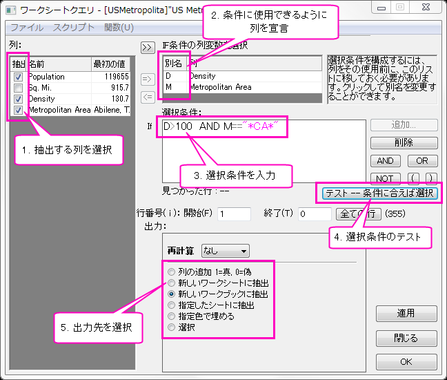
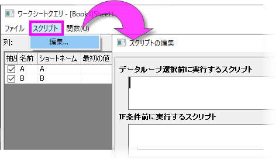
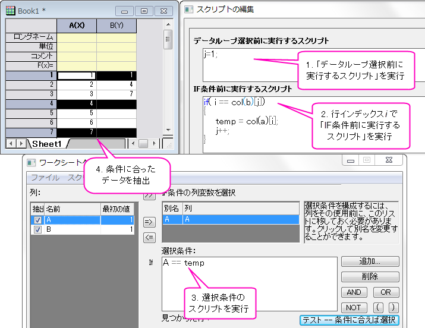
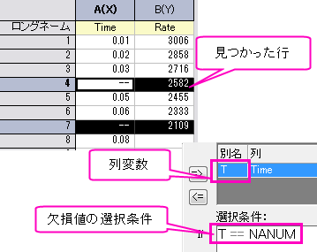
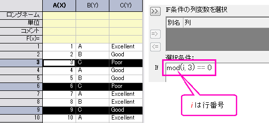
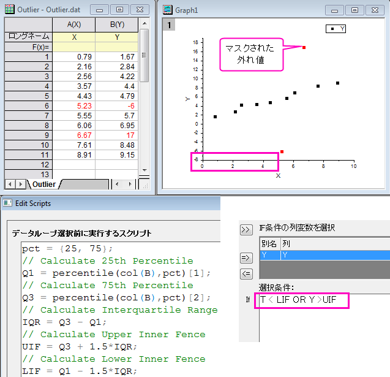

ワークシートクエリ - クイックスタート
Wks-Query-QS
ワークシートクエリダイアログは、ユーザ指定の条件式に従って、ワークシート・データの行単位の選択、抽出、またはカラーマーキングに使用されます。
- ワークシートをアクティブにして、メインメニューからワークシート：ワークシートクエリを選択します。
設定ダイアログボックスの制御
次の図は、ワークシートクエリダイアログボックスでコントロールを設定する順序を示しています。次のいずれかが真の場合は、手順1aを実行する必要があります。
- ワークブックでスプレッドシートのセル表記がオフになっています。
- ワークブックでスプレッドシートのセル表記がオンになっていますが、ダイアログボックスの右上隅にある別名を使用ボックスをオンにすることを選択しました。
- 
| Note:左のパネルに水平にリストされている列の情報について、このパネル内で右クリックし、列の番号やショートネーム、ロングネームなど、表示したいアイテムをクリックします。
|
スプレッドシートのセル表記、使用別名および列の命名に関する注意
このツールは、Origin 2017でスプレッドシートセル表記（SCN）が導入される前のバージョンです。以前は、データ列を表すエイリアスの使用は、実際の列名の使用に代わる効率的な方法でした。別名は1文字にすることができますが、ショートネームの列でも参照するにはcol（）関数を使用する必要がありました（例： "M <= 0"と "Col（A）<= 0"）。SCNが導入されたため、値の設定 ダイアログまたはセル式で列のショートネームを囲むためにcol（）関数を使用する必要がなくなりました。
Origin 2019b以降、SCNがオン（デフォルト）で別名の使用がオフの場合、ワークシートクエリのIf式でショートネーム列を直接使用できます。この変更は、If式を構築するためのオプションを追加するだけです。式を構築するための「正しい」方法はありませんが、次のことが自分に最適な方法を決定するのに役立ちます。
- ワークブックでSCNがオフになっている場合（たとえば、カスタマイズされた列のショートネームを持つ古いプロジェクトファイルがある場合）、いつもどおり作業を続けることができます。ワークシートクエリツールは、見た目も機能も変わりません。
- ワークブックでSCNを有効にしている場合（Originバージョン2017以降のすべての新しいワークブックのデフォルト）、ワークシートクエリの右上隅に別名を使用ボックスが表示されます。ワークシートクエリーに慣れていて別名オプションの使用が好ましい場合は、Origin 2019bより前のバージョンと同じように別名を使用をチェックしてダイアログを使用できます。
- ワークブックでSCNがオンになっていて、エイリアスを宣言せずにIf式で列のショートネームまたはロングネームを直接使用する場合は、別名を使用をオフのままにして、次の形式を使用します。
- "col（A）"の代わりに "A"を使用してください。col（A）を使用した式は機能しますが、col（）関数を使用する必要はありません。
- 式でカラムのロングネームを使用するには、それらをcol（）関数で囲む必要があります。ロングネームにスペースが含まれる場合は、ロングネームを二重引用符で囲む必要があります（例：col("Population Density")<=100)）。
- 追加...ボタンを使用してIf式に条件を追加する場合は、追加...がIf条件の列変数の選択フィールドで強調表示されているものをすべて選択するため、別名を使用をオンにします。
簡単なチュートリアル
- インポートウィザードを使って、Samples\Data Manipulation\US Metropolitan Area Population.dat ファイルをインポートします。インポート先のワークシートには場所は以下の4列が含まれています。: (Population, Sq.Mi., Density, and Metropolitan Area)
- メニューのを選び、ワークシートクエリダイアログボックスを開きます。
- SCNがオンの場合、または別名を使用を選択していない場合は、この手順を省略してください。SCNがオフの場合、または別名を使用ボックスを選択した場合は、Ctrlキーを押しながら列：パネルのDensityとMetropolitan Areaを選択します。=>ボタンをクリックして、これらの列をIf条件の列変数の選択パネルに移動します。別名DとMがそれぞれ列に割り当てられていることに注目してください。
- 左パネルのSq.Miの前にあるチェックボックスのチェックを外し、この列が抽出結果に含まれないようにします。
- 別名を使用ボックスがオンになっているかどうかに応じて、条件ボックスに次のいずれかの式を入力します。A-N-Dと入力せずに、AND ボタンをクリックすることもできます。
- D> 100 AND M == "* CA *"またはD> 100 AND M = "* CA *"（SCN OFF、または、別名を使用にチェックされていて、データ表記には別名を使用）
- C> 100 AND D == "* CA *"またはC> 100 AND D = "* CA *"（SCN ON、別名を使用にチェックされておらず、データ表記にはショートネームを使用）
- この2つの条件は、カリフォルニア州("CA")のすべての地域で、100人以上の人口密度(Density)域を探します。このツールは、文字列内の*などのワイルドカード記号をサポートしています。
- テスト - 条件に合えば選択ボタンをクリックします。選択条件ボックスの下に見つかった行の数が更新され、ワークシート内の一部の行が強調表示されていることに注意してください。
- 再計算ドロップダウンリストから自動を選択し、データが変更された場合に結果が更新されるようにします。
- 出力から "新しいワークシートに抽出" ラジオボタンを選択し、OK ボタンをクリックします。抽出された結果がソースワークブックの新しいワークシートに保存されていることがわかります。
選択条件テキストボックスに何を入力したら良いですか？
あなたの条件を構築するために、列名または別名と関係演算子（>、<=、！=など）、算術演算子（+、 - 、*、/、^）、および論理演算子（&&（AND）、||（OR）を使用できます。 （この表を参照）
関数メニューを使って組み込み関数を挿入することもできます。 あるいは、ユーザー定義関数を作成することもできます。
数値データ
| サンプル
|
説明
|
| T > 0
|
0より大きい列の別名 "T"の値を持つ行を抽出する。
|
| col("Population Density") > 1000
|
列ロングネーム "Population Density"の値が1000より大きい行を抽出する
|
| A > 0
|
列のショートネーム "A"の値が0より大きい行を抽出する。
Note：次の構文も機能します。col(A) > 0またはcol(index) > 0（indexは列番号）
|
| A.top(10)
|
列ショートネーム「A」の最大値10個で行を抽出します。
|
| N^2 != F
|
列 "N"（別名または短縮名）の値の2乗が列 "F"（別名または短縮名）の値と等しくない行を抽出します。
|
| A != -- (or A != NANUM)
|
欠損値がなく、列 "A"にテキスト文字列がない行（別名または短縮名）を抽出します。
|
| mod(i, 3) == 0
|
mod()関数を使用して選択された全行の3行ごとに抽出します。ここでi は行インデックス変数です。
|
文字列データ
| サンプル
|
説明
|
| B == "*CA*" (or B = "*ca*")
|
文字列内に "CA"を含む行を抽出するには、別名または短縮名 "B"の列のセル内に格納します。*（文字列）や？などのワイルドカード記号に注意してください。(文字)などのワイルドカードシンボルはサポートし、大文字小文字の区別はありません。
|
| NOT(A="Tom" OR A="James")
|
列Aに「Tom」または「James」を含む行を除くすべての行を抽出します。
|
|
A != NANUM
OR A == "--"
OR A == ""
|
列名Aの列の数値データ、 "--" 、空の行をハイライトします。複数行の条件式を入力するには、Enterキーを使用します。
|
| isText(B)
|
isText()関数を使用して、列名Bの列にテキスト文字列を含む行を抽出します。
|
日付データ
| サンプル
|
説明
|
| frac(B) > Time(10:00:00) AND frac(B) < Time(11:00:00)
|
frac() および Time() 関数を使用してB列内の10:00 ~ 11:00 の範囲のデータを抽出します。
|
| int(A) > Date(01/24/2004)
|
int() および Date()関数を使用して列Aの日付が2004/01/24より後のデータを抽出します。
|
より高度なスクリプトでデータ抽出
- 
使用方法はオプションですが、スクリプトを使用するとワークシートクエリダイアログの機能が向上します。このボックス（スクリプト：編集...）は1行以上のLabTalkスクリプトを取り、条件ボックスの式が実行される前にそれらを実行します。入力データの前処理や、選択条件に使用する関数・変数・定数の定義などで使用できます。
Originは実際には以下のようにデータクエリルーチンを実行します。
- データループを選択する前にスクリプトを実行します。
- ユーザーが指定した開始値と終了値で定義されたすべての行をループします。行番号がiである各列に対して、
- IF条件前に実行するスクリプトを実行します。
- 行 iのデータに対して、条件をテストします。
- 条件が真であればデータを抽出します。
- クエリを終了します。
- ループを終了します。
クエリの実行ルーチンを確認するには、次のサンプルを実行します。このサンプルは、列Bのインデックスを使用して列Aのデータを抽出するものです。
- データループ選択時に実行するスクリプト、IF条件前に実行するスクリプト、選択条件に下図のようなコマンドを入力します。
- テスト--条件に合えば選択ボタンをクリックすると、1、4、7行が選択されます。
- 
クイックサンプル
欠損値を含む行を削除する
-
 ボタンを使用して列 "Time" をIF条件の列変数を選択ボックスに追加します。
ボタンを使用して列 "Time" をIF条件の列変数を選択ボックスに追加します。
- 選択条件ボックスに、T == NANUM (NANUM は欠損値) に入力します。
- テスト--条件に合えば選択をクリックして列 "Time"に欠損値が含まれる場合に行を選択します。
- 選択された行を右クリックして、ショートカットメニューから削除を選択します。
- 
N番目の行ごとに抽出
- 選択条件にmod(i, 3) == 0と入力します。ここで、i は行インデックス変数で、mod(m,n) mをnで割った整数の係数を返します。
- テスト--条件に合えば選択をクリックして選択し、OKボタンをクリックして新しいワークブックに抽出します。
- 
外れ値をマスク
このサンプルは、25および75パーセンタイルを使用して外れ値をマスクする方法を示します。
1.データループ選択前に実行するスクリプトに以下のコマンドを入力します。
pct = {25, 75};
Q1 = percentile(col(B),pct)[1];
Q3 = percentile(col(B),pct)[2];
IQR = Q3 - Q1;
UIF = Q3 + 1.5*IQR;
LIF = Q1 - 1.5*IQR;
2.選択条件にY < LIF OR Y > UIF を入力します。
3.テスト--条件に合えば選択ボタンをクリックして検索された外れ値を選択します。
4.選択された行を右クリックして、ショートカットメニューからマスク：適用を選択します。
- 
関連項目